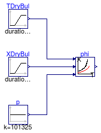
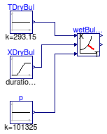

Collection of models that illustrate model use and test models
This package contains examples for the use of models that can be found in Buildings.Utilities.Psychrometrics.
Extends from Modelica.Icons.ExamplesPackage (Icon for packages containing runnable examples).
| Name | Description |
|---|---|
| Model to test the density computation | |
| Unit test for dew point temperature calculation | |
| Unit test for humidity ratio model | |
| Unit test for dew point temperature calculation | |
| Model to test the relative humidity computation | |
| Model to test the wet bulb temperature computation | |
| Model to test the wet bulb temperature computation | |
| Model to test the wet bulb temperature computation | |
| Model to test the wet bulb temperature computation | |
| Unit test for conversion of humidity per total air and dry air mass | |
| Model to test the wet bulb temperature computation |
 Buildings.Utilities.Psychrometrics.Examples.Density_pTX
Buildings.Utilities.Psychrometrics.Examples.Density_pTX
Model to test the density computation

This examples is a unit test for the density computation.
Extends from Modelica.Icons.Example (Icon for runnable examples).
Buildings.Utilities.Psychrometrics.Examples.DewPointTemperature
Unit test for dew point temperature calculation

Extends from Modelica.Icons.Example (Icon for runnable examples).
Buildings.Utilities.Psychrometrics.Examples.HumidityRatioPressure
Unit test for humidity ratio model

Extends from Modelica.Icons.Example (Icon for runnable examples).
Buildings.Utilities.Psychrometrics.Examples.MassFraction_pTphi
Unit test for dew point temperature calculation

Extends from Modelica.Icons.Example (Icon for runnable examples).
Buildings.Utilities.Psychrometrics.Examples.Phi_pTX
Model to test the relative humidity computation

This examples is a unit test for the relative humidity computation.
Extends from Modelica.Icons.Example (Icon for runnable examples).
Buildings.Utilities.Psychrometrics.Examples.SaturationPressure
Model to test the wet bulb temperature computation

Extends from Modelica.Icons.Example (Icon for runnable examples).
Buildings.Utilities.Psychrometrics.Examples.SaturationPressureLiquid
Model to test the wet bulb temperature computation
Extends from Modelica.Icons.Example (Icon for runnable examples).
Buildings.Utilities.Psychrometrics.Examples.SublimationPressureIce
Model to test the wet bulb temperature computation
Extends from Modelica.Icons.Example (Icon for runnable examples).
Buildings.Utilities.Psychrometrics.Examples.TWetBul_TDryBulPhi
Model to test the wet bulb temperature computation

Extends from Modelica.Icons.Example (Icon for runnable examples).
Buildings.Utilities.Psychrometrics.Examples.TWetBul_TDryBulXi

Extends from Modelica.Icons.Example (Icon for runnable examples).
Buildings.Utilities.Psychrometrics.Examples.TotalAirDryAir
Unit test for conversion of humidity per total air and dry air mass

Extends from Modelica.Icons.Example (Icon for runnable examples).
Buildings.Utilities.Psychrometrics.Examples.WetBul_pTX
Model to test the wet bulb temperature computation

Extends from Modelica.Icons.Example (Icon for runnable examples).